Provides a list of annotation layers that mark 45, 135, 225, and 315 degrees on a unit circle.
Usage
degree_labs(
display = circ_display(),
colour = "black",
units = NULL,
size = 3.88,
family = "",
position = c("outside", "inside", "split"),
inside_radius = 0.88,
n = NULL,
outer_radius = NULL,
color = NULL
)Arguments
- display
A [`circ_display`] object. Default `circ_display()`. Supplies the label units when `units` is `NULL`.
- colour, color
Label colour. Default `"black"`. `color` is the American-spelling alias.
- units
`"degrees"` (e.g. `45°`) or `"radians"` (e.g. `π/4`). When `NULL` (default) the units are taken from `display`.
- size
Label text size, in mm. Default `3.88` (ggplot2's default text size).
- family
Label font family. Default `""` (the device default).
- position
Where to place the labels: `"outside"` (default) keeps the four diagonals (45/135/225/315) in the plot corners, as before; `"inside"` puts all eight directions (including the cardinals 0/90/180/270) just inside the circle at `inside_radius`; `"split"` puts the cardinals inside and the diagonals outside. The `"inside"`/`"split"` modes honour `display` (the labels rotate with the plot).
- inside_radius
Radius (unit-circle fraction) for inside labels. Default `0.88`.
- n
Number of equally-spaced labels at `360 / n` degrees from 0. `NULL` (default) keeps the legacy set (4 diagonals for `"outside"`, 8 for `"inside"`/`"split"`). `0` draws none. For `position = "split"`, `n` must be divisible by 4 (so the quadrant directions are present); otherwise it falls back to `"inside"` with a message.
- outer_radius
Optional corner magnitude for the diagonal `"outside"` labels. `NULL` (default) keeps the historical `0.9*sqrt(2)` distance; a larger value pushes them outward (e.g. to clear stacked circular-boxplot rings).
Examples
library(ggplot2)
ggplot() +
coord_fixed() +
degree_labs()
